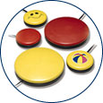

Index
This list of products is for reference purposes only and does not reflect endorsement by the IDRC.
Description
Switches are a common solution for users with mobility disabilities who need to use computers or other electronic devices, but have difficulty with the physical interface. To allow easier manipulation than a standard keyboard or joystick, a specially-designed switch may be composed of a single button, merely a few buttons, a sensory plate, or another of the whole host of adaptive switches available; it may also be touch-free, relying instead on motion sensors, brain activation, or a sip and puff mechanism. Aside from simplifying input devices, switches can also be used as developmental aids, teaching children (or adults) how to interact with their external environment.
Points to ponder - Questions to consider when shopping for switches
- An accurate assessment will be required to identify a reliable, consistent and repeatable movement that the individual will be able to make from their normal seating position. When choosing the switch modality (e.g., one touch, variable pressure, hands-free, etc.), one needs to consider:
- The individual’s medical condition including expected course and prognosis and other related medical issues such as skin conditions, which could affect movement.
- Physical functioning: which movements are voluntary and which are involuntary. What is the range of movement? Is it accurate? How quickly can the movement be made and how much pressure can be applied?
- Is there any sensory impairment, which may affect the use of the equipment? Visual difficulties, hearing impairment, tactile problems?
- Are there any known perceptual problems to consider? Hand to eye coordination, tracking or scanning difficulties, problems with the left or right side, spatial relationships?
- Once you have taken into consideration the individual’s motor control challenges, visual abilities, cognitive involvement, and developmental needs in choosing the appropriate switch, consider the following:
- What is its’ power source? Or is a separate power source required?
- Is it compatible with your computer's operating system?
- Is it compatible with the software you'll be using? If not, are there switch interface available that will ensure it is?
- Does it come with a mount?
- Consider the environment you will be using it (i.e., home, school, work etc.). Does it need to be lightweight and easy to pack/carry? Does it need to be wireless?
- Consider the set up requirements. Is it reliable or does it need continuous readjustment?
Switches and their manufacturers
- AbleNet
- School Specialty - Abilitations
- Adaptivation Incorporated
- Bridges Canada
- EnableMart
- Flaghouse
- Inclusive TLC
- Infogrip
- Words+
- Sammons Preston
- ZYGO Industries, Inc.
Accessories
- Enabling Devices, a division of Toys for Special Children, Inc., is "dedicated to providing affordable learning and assistive devices for the physically challenged." They design switch-adapted plush toys and switches specifically designed for children, among many other things, including switch mounting accessories, switches that aid development, and biofeedback devices.
- Crestwood's Adapted Toys include a variety of modalities; a toy may act as a switch itself, activated by a tap on the head, or a separate switch can be used to control the toy.